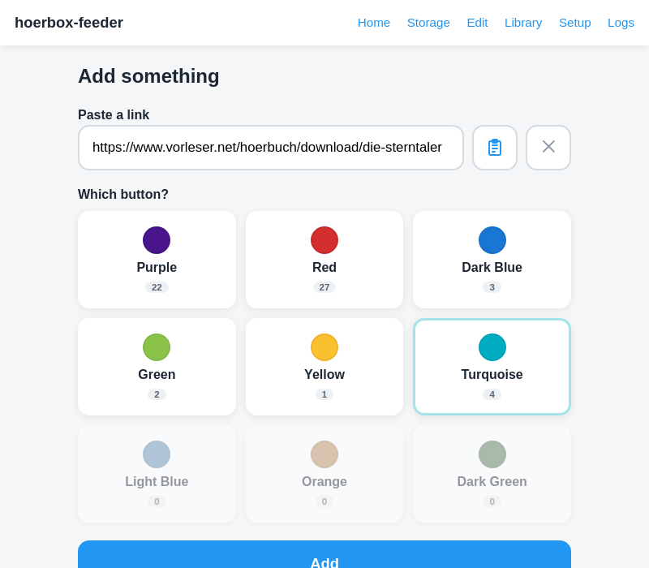
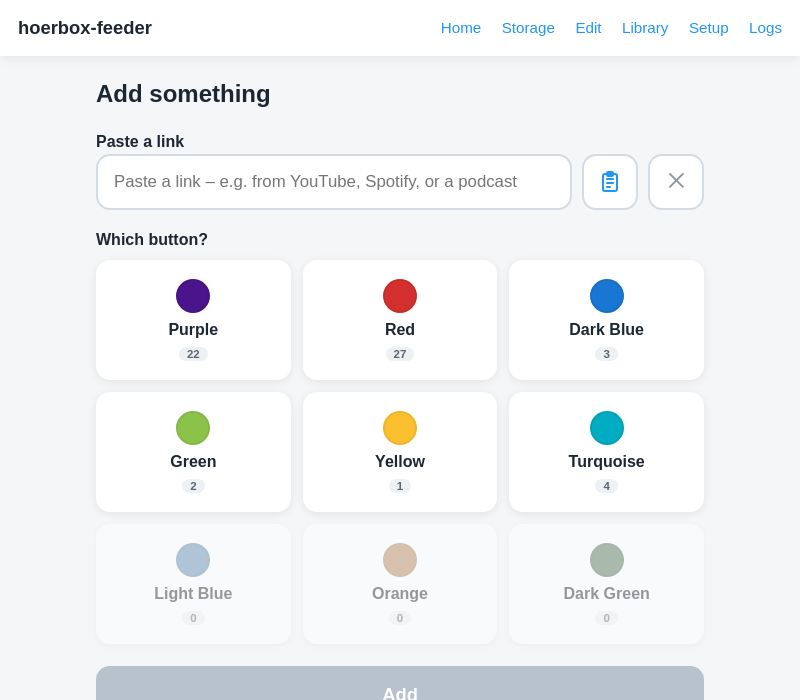
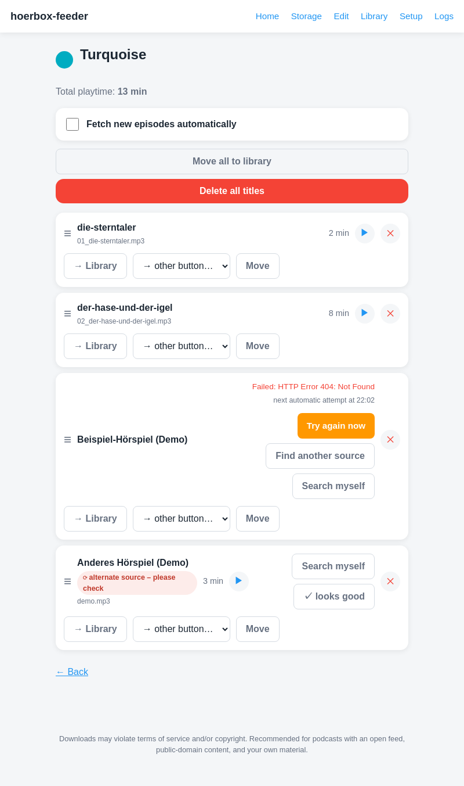
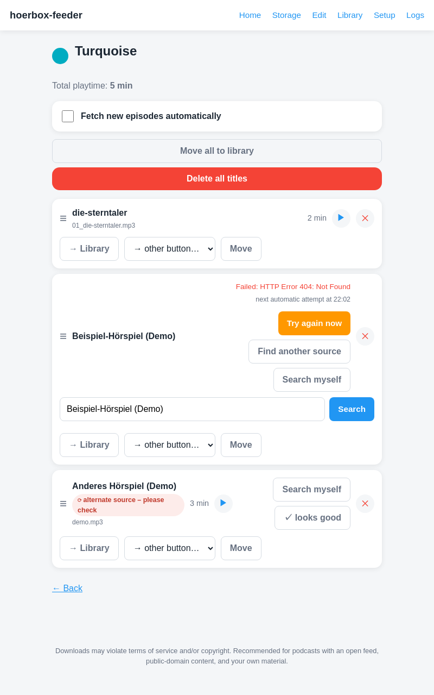
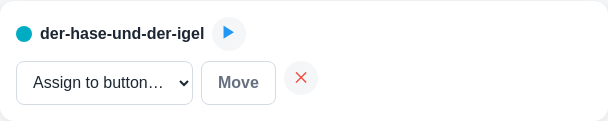
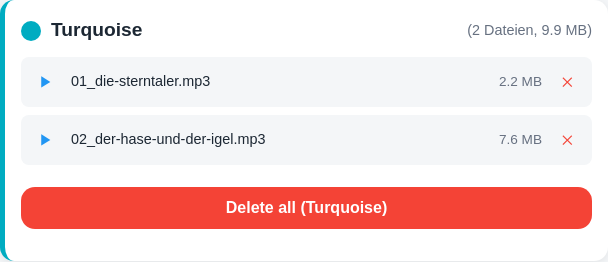
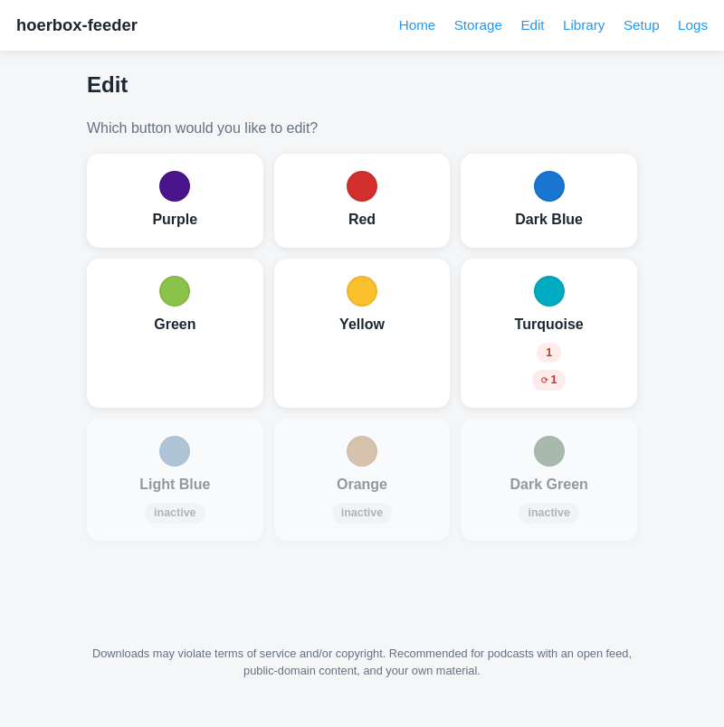
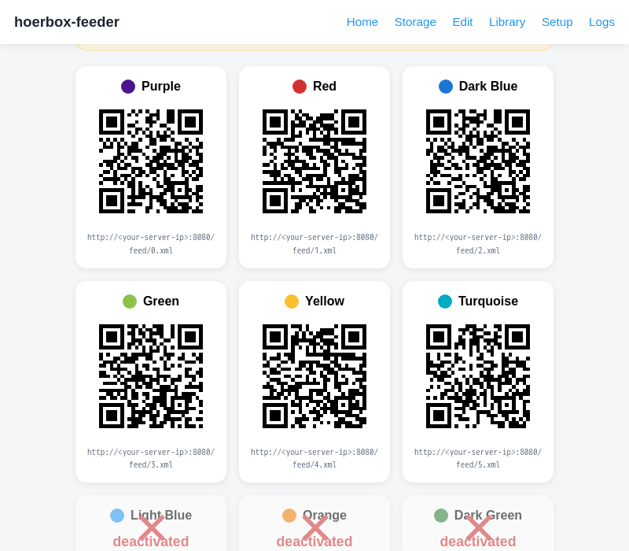
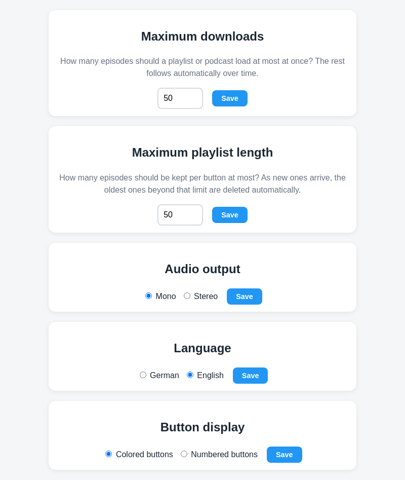
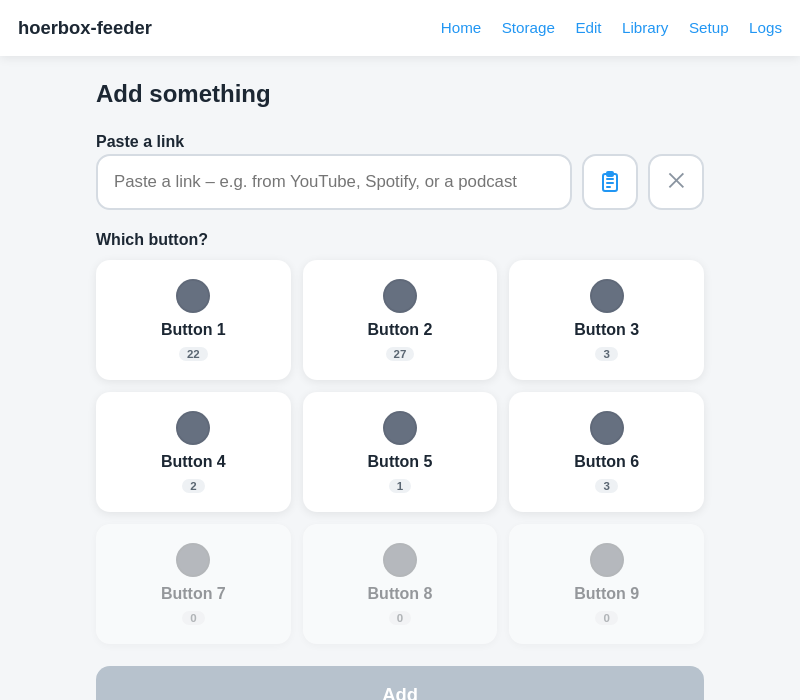

User Guide – how to fill the nine buttons with music, audiobooks, and podcasts, with no cables or SD card involved.
hoerbox-feeder is a small web page that runs on your home WiFi. You paste a link there from your phone, tablet, or PC – e.g. from YouTube, Spotify, or a podcast – and assign it to one of nine colored buttons. hoerbox-feeder downloads the content, converts it into a consistent audio format, and makes it automatically available to the player. New episodes of a playlist or podcast then arrive on their own afterward – you don't have to repeat anything.
This is the path you'll use most often:

Link pasted, "Turquoise" button selected – the "Add" button becomes active.
You'll then see a progress display: first "Preparing …", then "Loading … X%", and briefly "Converting to audio …" at the end. Once it's done, the title shows up under the button you chose.
If it turns out to be a whole playlist or podcast feed rather than a single title, hoerbox-feeder detects that automatically and sets up a subscription: new episodes are then fetched automatically going forward, without you having to paste the link again (more on this in chapter 4).
On the home page you see all nine buttons with their color and – in small text underneath – how many titles currently sit there. A button can also be deactivated (shown grayed out): useful, for example, when that button is played externally on the device, say from an SD card, and you want hoerbox-feeder to leave it alone (see chapter 9).

Six active buttons with an item count, three deactivated (grayed out).
Tap a button to see all its titles. For each title, you have these options:
If a title belongs to a playlist or podcast subscription, all its episodes are grouped into a block (expandable/ collapsible), with the same actions also available for the whole block at once. The Fetch new episodes automatically switch turns automatic fetching on or off for that button – when it's off, existing episodes stay, but nothing new arrives on its own anymore.
The button's header also lets you move the entire button's content to the library, or delete it all, in one go:

Button view: two finished titles, one failed title, and one title with an automatically found replacement source – every action at a glance (example content, public domain).
Sometimes a link fails to load (e.g. because the video was deleted). The title then shows a short error message and offers:

"Search myself" opens an input field right below the affected title.
If a replacement source was found automatically (without anyone reviewing it), the title shows the hint ⟳ alternate source – please check. A quick listen is usually enough to tell if it's right – tapping ✓ looks good dismisses the hint afterward.
The library is a holding area for titles and playlists that shouldn't be assigned to a button right now, but also shouldn't be deleted. From there, every entry can be assigned to a button, played, moved, or permanently deleted at any time.

A parked title in the library.
The Storage page shows how much space is used in total and per button, with every individual file available to listen to or delete. If your player is loaded via an SD card instead of WiFi, the "Download for SD card" button at the top downloads all titles as a ZIP file, already sorted into numbered folders 0–8 – just unzip and copy onto the card.

Storage for one button with two files.
"Edit" is the quick way to a specific button, with small warning hints right on the tile: a red number shows titles currently having a problem, a ⟳ chip shows automatically found, not-yet-reviewed replacement sources.

A button with one problem title and one replacement source still awaiting review.
The Setup page is mainly meant for one-time setup:
Every button has its own address (as a QR code and as text), entered once into the player or a podcast app. New titles then appear there on their own afterward.

Every button gets its own address to enter once.
Is a button already playing external content (e.g. from an SD card)? You can deactivate it here by clicking its QR code. hoerbox-feeder then leaves it alone so nothing gets mixed up.
Five values can be adjusted here for the whole app:

| Maximum downloads | how many episodes of a playlist/podcast load at most the first time – the rest follows automatically over time. |
| Maximum playlist length | how many episodes are kept per button at most – older episodes beyond that are automatically moved to the library (not deleted). |
| Audio output | mono or stereo for new downloads. Already-loaded titles keep their existing audio channels. |
| Language | German or English – switches the whole interface, immediately after saving. |
| Button display | colored buttons (default) or numbered buttons – shows all nine buttons neutral/gray with a number (1–9) instead of a color name, for hörbert variants without colored keys. |
In numbered-button mode, every button – shown here on the home page – shows just a number instead of a color/color name.

If YouTube downloads are being blocked, you can also upload a YouTube access (cookies file) here – a green checkmark at the top of the Setup page shows whether that's already set up.
For questions, bugs, or ideas, the best contact is whoever set up hoerbox-feeder for you.